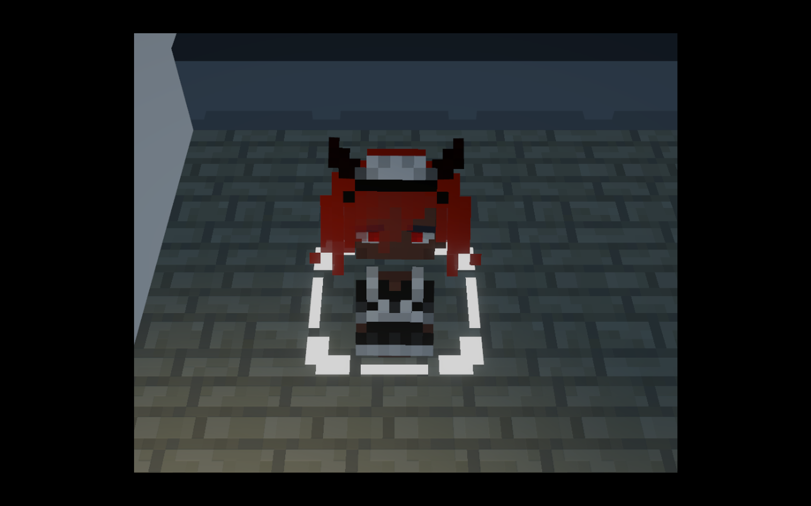

拾柒號咖啡馆
206X.
The Third World War has come to an end.
The conflict claimed hundreds of millions of lives, reduced half the world’s cities to rubble, and cast countless cultures and regimes into the ruins of history. The only things it failed to erase were the barriers of social class and the relentless expansion of human desire.
During the war years, genetic engineering was pushed to its very limits. Researchers spliced fragments of human DNA with that of other mammals, creating the so-called “Beastkins.” On the frontlines, they achieved irreplaceable feats, filling the gaps in conventional forces with their blood and flesh. Yet when the bells of peace rang, these “orphans of the laboratory” were swiftly abandoned by society.
Once weapons of victory, they became a despised people. Discrimination, prejudice, and isolation pervaded every corner of their daily lives.
It is in this age that you run a small restaurant on a street corner.
Beyond the door lies a cold and indifferent society; within, one of the few shelters the Beastkins can call their own. You may choose to exploit them, treating them as cheap labor, or you may choose to accept and protect them, turning the restaurant into their new home.
No one will interfere with your decision—for in this world, few truly care about their fate.
Here, they are no longer called “Beastkins,” but “Employees.”
Employees have their own names, backgrounds, hobbies, and personalities. They grow weary from long hours, hungry from lack of food, bored when idle. They can break down from sorrow, or smile with joy when given a birthday cake.
Remember—or choose to forget—that they are living, breathing people, just like you.
At no point will the game encourage, condemn, or preach to you. You are the author of this story, and the bonds you form with your employees—whether warm, harsh, or inhuman—are entirely the result of your own free will.
The inspiration for this game traces back to the summer of 2025. Its origin was not dramatic, but instantaneous: I wanted to make a game about running a café. Soon, however, I realized the real focus was not the café itself, but whether the game could become one filled with humanity.
I did not want it to become just another entry in the long line of management sims: automated production lines, endless pursuit of profit and efficiency, relentless expansion of scale… much like Cities: Skylines, Satisfactory, or Dyson Sphere Program. These games, excellent as they are, all share one thing in common: the absence of humanity. In them, “productivity” is abstracted into cold numbers. Labor can be a chip, a resource, a statistic—but rarely, if ever, a person.
A striking example is Frostpunk. Its design is steeped in controversy: in theory, players can save every citizen and ultimately establish a prosperous city, but only at the cost of mid-game authoritarian laws—overwork, the suppression of human rights. Conversely, if one insists on “humane” laws such as an 8-hour workday, then the city inevitably loses people due to insufficient productivity. The game forces the tension between collectivism and individualism into sharp focus. And when players finally achieve the “zero casualties” ending, the game condescendingly asks, “Was it worth it?” The designers knew full well that if no one died, it must have been because players had sacrificed human rights. This is a very sharp line of thinking: which is more important, “man’s life” or “man’s rights”? Clearly, the developers of Frostpunk chose the latter and explicitly looked down upon players who chose the former.
That experience left a deep impression on me. From it, I drew one of the most important lessons as both a player and a developer: players hate being preached to. Clearly, the designers of Frostpunk crossed a line. Perhaps their intent was noble—to show that management sims could reflect the human side of society, or to emphasize that people are not mere pawns or digits. But in the end, their message tipped into the realm of ideological propaganda.
And this brings me to my own question: Can I do better? Can I better express the “human” dimension of management games?
RimWorld offers an inspiring answer. As its creator Tynan Sylvester once said: “RimWorld is not a game, it’s a story generator.” Through a series of absurd yet believable events, he gave colonists a sandbox in which to write their own stories. They form relationships, fall in love, quarrel with rivals, cherish family ties, pursue hobbies, hold beliefs. Each one is different—just as we all are in real life.
Returning to my idea of a “café” game, I want to take a similar path: to build not just a simulation of numbers, but a living space full of individuals. Employees and customers would no longer be abstracted resources or automated figures, but people with personalities, desires, emotions, and bonds.
It is an idea worth pursuing. And looking at the current market, there seem to be no true competitors in this direction—perhaps I could be the first to try?

This is an employee. Click on her to view their information panel.